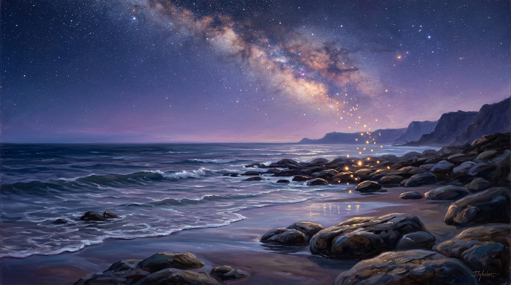

The Continuation of Awareness
A Gentle Inquest into the Conservation of Consciousness Beyond the Physical Form

“Everything transforms. Everything continues in a different form. If nature moves in cycles, perhaps awareness does too. Perhaps death is simply one of those cycles, a natural movement from one state to another.” — Trevor Swistchew
The Conservation of Being & Consciousness Matrix
Archival Research & Thematic AnalysisDropped Into a World in Motion
We arrive into physical life without prior warning, memory, or context, seamlessly accepting existence as natural. If consciousness can emerge unbidden into matter once, why should its transition out of matter signify annihilation rather than continuity?
Life begins in a way that feels sudden, as though we have been dropped into a world already in motion. We arrive without memory, without context, without any sense of where we came from or what we truly are. As children, we simply exist, carried along by the warmth of others, by the rhythms of the world, by the gentle unfolding of days. We do not question our presence. We do not wonder about beginnings or endings. We simply live, and living feels natural.
As we grow older, something changes. Awareness deepens. We begin to notice the passing of time, the fragility of the body, the way moments slip away even as we try to hold them. We learn that life is not endless, that bodies age, that people we love disappear from our sight. This knowledge arrives slowly, sometimes painfully, and it shapes the way we understand our place in the world. Yet even as we learn these truths, something inside us remains untouched by them. There is a quiet presence within us that does not feel fragile, does not feel temporary, does not feel threatened by the idea of endings. It is the part of us that watches, listens, and continues.
This inner presence is what many traditions call the soul, though the word itself is not important. What matters is the experience of being aware, the sense that there is something in us that is deeper than the body, quieter than the mind, and more enduring than the circumstances of our lives. This presence does not feel like an idea or a belief. It feels like the simple fact of being here, the gentle knowing that accompanies every moment. It is not loud. It does not demand attention. It simply exists, steady and calm, beneath everything else.
When people speak of death, they often speak with fear, and that fear is understandable. The body is precious to us. It carries our memories, our relationships, our joys, our sorrows. It is the vessel through which we experience the world. To imagine its ending can feel overwhelming. Yet if we look closely, we notice that the fear does not come from the quiet presence within us. It comes from the part of us that identifies with the body, the part that believes the body is the whole of who we are. The deeper presence the one that watches does not tremble. It does not panic. It simply observes.
There is a gentle way to think about death that does not frighten the heart. Instead of imagining death as a disappearance, we can imagine it as a transition, a soft movement from one kind of experience to another. Just as waking from sleep does not erase the sleeper, death may not erase the one who has lived. It may simply open a different door, one that leads to a new kind of learning, a new kind of awareness, a new way of being.
Many traditions hint at this idea, though they use different language. Some speak of “many mansions,” suggesting that reality is not limited to the world we see. Others speak of realms, planes, or states of consciousness. Still others describe death as a return, a homecoming, a gentle remembering of something we once knew but forgot when we entered the body. These images are not meant to be literal. They are meant to offer comfort, to remind us that existence may be larger than the physical world, and that awareness may continue even when the body rests.
If we imagine life as a school, death becomes less frightening. In school, we learn the basics: how to speak, how to move, how to understand the world around us. Life in a body may be similar. It may be the beginning of learning, the introduction to awareness, the first chapter in a much larger story. When the body can no longer continue, the learning does not stop. It simply changes form. The soul or the quiet presence within us may continue to grow, to explore, to understand, to deepen.
This way of thinking does not require belief in any particular religion. It does not require acceptance of any doctrine. It simply invites us to consider the possibility that awareness is not confined to the body, and that death may not be the end of the journey. It is a gentle idea, one that softens fear rather than intensifying it. It allows us to imagine that those who have gone before us are not lost, but simply moved into another room, another space, another chapter.
If awareness continues, then learning continues. And if learning continues, then life continues in a new way. This idea is comforting because it aligns with something we already feel inside ourselves: the sense that we are more than the body, more than the mind, more than the circumstances of our lives. It aligns with the quiet presence that watches everything without fear.
Some people imagine an afterlife filled with eternal worship or endless repetition, but this image does not resonate with everyone. For many, it feels limiting, as though the soul would be confined rather than liberated. A gentler idea is that the soul continues to grow, to explore, to understand. Instead of imagining eternity as a static place, we can imagine it as a continuation of learning, a deepening of awareness, a movement toward greater clarity and peace.
If the universe is vast, then awareness may be vast as well. If reality contains layers, dimensions or realms beyond our current understanding, then the soul may move through them, learning as it goes. This movement would not be rushed. It would not be forced. It would unfold naturally, just as life unfolds naturally. The soul would not be judged or punished. It would simply continue, gently and quietly, in the direction of greater understanding.
This way of thinking about death does not remove grief. Grief is a natural response to losing someone we love. It is a sign of connection, of care, of shared experience. But grief becomes softer when we imagine that the person we miss is not gone, but simply elsewhere. It becomes easier to bear when we imagine that they are continuing their journey, learning in a new way, experiencing a new chapter. It becomes less sharp when we imagine that awareness does not end, but simply changes form.
The idea that the soul continues is not meant to be a grand claim. It is meant to be a gentle possibility one that brings comfort rather than fear. It allows us to think of death without panic, without dread without the sense that everything ends. It allows us to imagine that life is part of something larger something ongoing, something quietly beautiful.
When we look at the world, we see constant change. Seasons shift. Flowers bloom and fade. Waves rise and fall. Clouds form and dissolve. Nothing stays the same, yet nothing truly disappears. Everything transforms. Everything continues in a different form. If nature moves in cycles, perhaps awareness does too. Perhaps death is simply one of those cycles, a natural movement from one state to another.